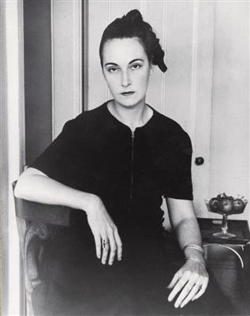
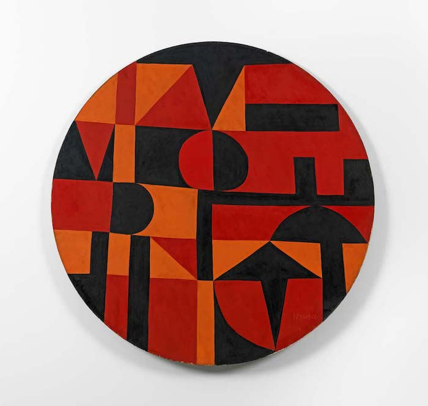
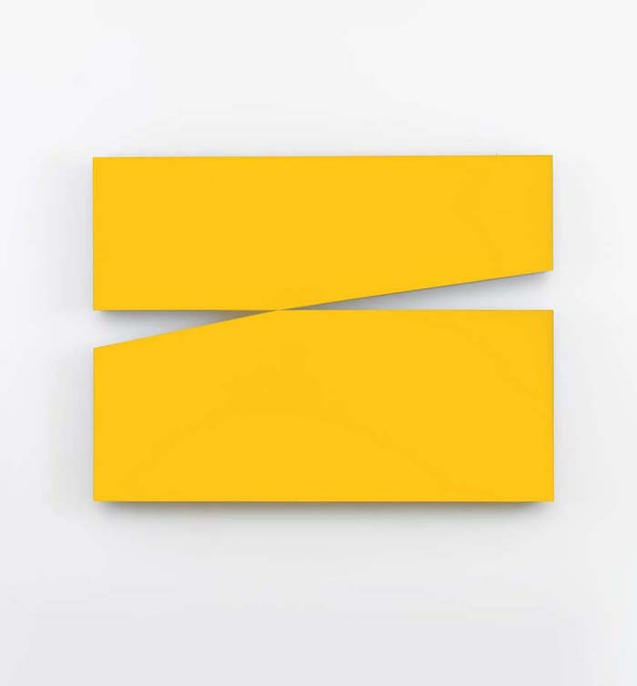
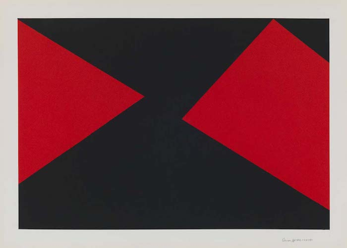
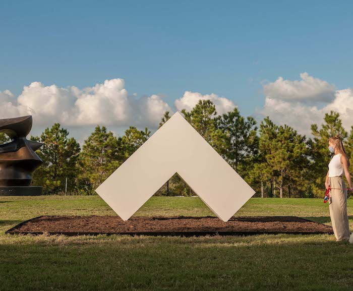
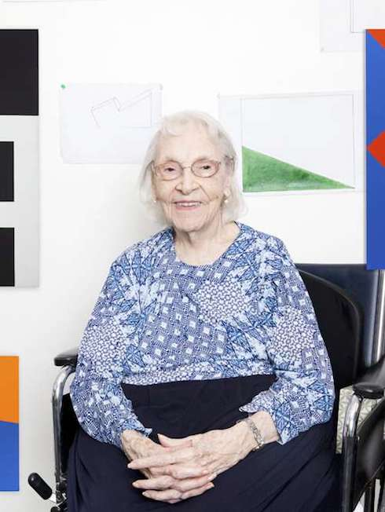

카르멘 헤레라(Carmen Herrera)
(1915년 ~ )
- 쿠바 출신의 추상화가, 미니멀리스트.
- 90살 이후에 주목받기 시작했다.
" 행운은 기다리는 이를 찾아온다."
.
.

이베리아Iberic, 1949.
.

노랑2(Amarillo Uno), 1971.
.

무제Untitled, 2015.
.

하얀 각도(Angulo Blanco), 2017.
.

카르멘 헤레라, 현 106세. 아직도 작업중.
.